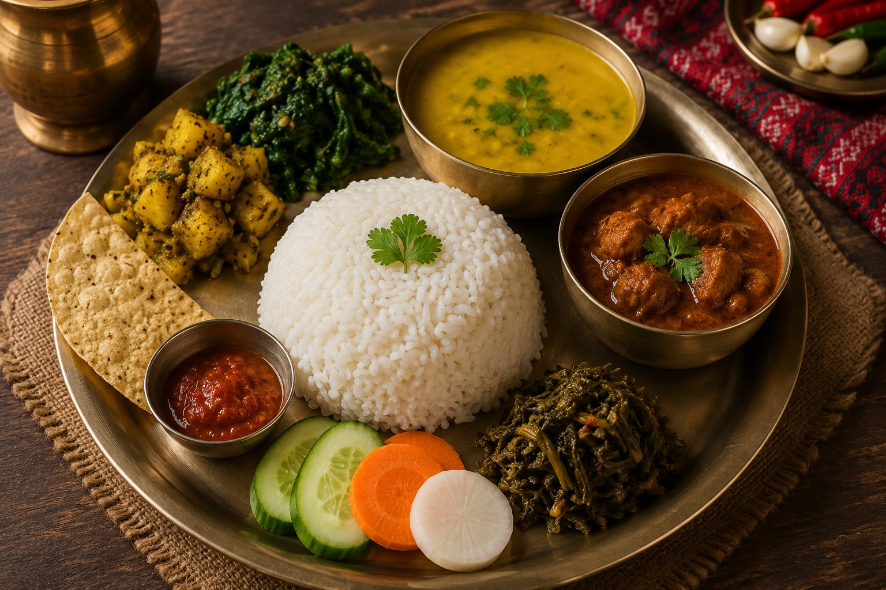

Explore Nepal's rich food culture with traditional recipes. Learn how to prepare delicious dishes like Momo, Dal Bhat, Sel Roti, Thukpa, Chatamari, and many more.
Explore Recipes
Traditional Nepali recipes passed through generations.
Step-by-step cooking guide for beginners.
Enjoy healthy and homemade Nepali meals.